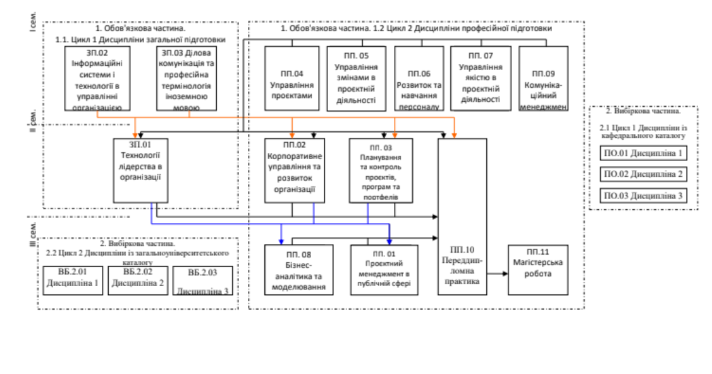

Другий (магістерський) рівень вищої освіти
Галузь знань: D Бізнес, адміністрування та право. Спеціальність: D3 Менеджмент
Група: МНП-М-2025. Виконав: Ковальчук Ігор
Основною метою освітньої діяльності Університету за спеціальністю «Менеджмент» за освітнім рівнем магістр є професійна підготовка висококваліфікованих фахівців, здатних конкурувати на ринку праці та ефективно виконувати завдання інноваційного характеру відповідного рівня професійної діяльності, які орієнтовані на дослідження й розв'язання складних задач, що відносяться до областей управління проєктами та програмами у сфері матеріального (нематеріального) виробництва для задоволення потреб підприємств у різних галузях, науки, бізнесу, територіальних громад.
| № з/п | Назва навчальної дисципліни | Кількість кредитів ЄКТС | Форма семестрового контролю |
|---|---|---|---|
| Цикл 1. Дисципліни загальної підготовки — 9 кредитів | |||
| ЗП 01 | Технології лідерства в організації | 3 | Залік |
| ЗП 02 | Інформаційні системи і технології в управлінні організацією | 3 | Залік |
| ЗП 03 | Ділова комунікація та професійна термінологія іноземною мовою | 3 | Залік |
| Цикл 2. Дисципліни професійної підготовки — 57 кредитів | |||
| ПП 01 | Проєктний менеджмент в публічній сфері | 3 | Залік |
| ПП 02 | Корпоративне управління та розвиток організації | 5 | Екзамен |
| ПП 03 | Планування та контроль проєктів, програм та портфелів | 5 | Екзамен, курс. робота |
| ПП 04 | Управління проєктами | 4 | Екзамен |
| ПП 05 | Управління змінами в проєктній діяльності | 5 | Екзамен, курс. робота |
| ПП 06 | Розвиток та навчання персоналу | 4 | Екзамен |
| ПП 07 | Управління якістю в проєктній діяльності | 4 | Екзамен |
| ПП 08 | Бізнес-аналітика та моделювання | 3 | Залік |
| ПП 09 | Комунікаційний менеджмент | 3 | Залік |
| ПП 10 | Переддипломна практика | 9 | Залік |
| ПП 11 | Магістерська робота | 12 | Публічний захист |
| Загальний обсяг обов'язкових компонент | 66 | ||
| Цикл 1. Дисципліни із кафедрального каталогу — 15 кредитів | |||
| ПО 01 | Дисципліна 1 | 5 | Залік |
| ПО 02 | Дисципліна 2 | 5 | Залік |
| ПО 03 | Дисципліна 3 | 5 | Залік |
| Цикл 2. Дисципліни із загальноуніверситетського каталогу — 9 кредитів | |||
| ВБ 2.01 | Дисципліна 1 | 3 | Залік |
| ВБ 2.02 | Дисципліна 2 | 3 | Залік |
| ВБ 2.03 | Дисципліна 3 | 3 | Залік |
| Загальний обсяг вибіркових компонент | 24 | ||
| ЗАГАЛЬНИЙ ОБСЯГ ОСВІТНЬОЇ ПРОГРАМИ | 90 | ||
